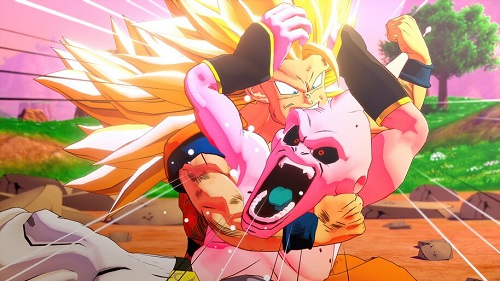

Le 25 ème tournoi des arts martiaux Sept ans après la bataille contre Cell, Son goku annonce à Son gohan qu'il va revenir une journée sur Terre pour participer au 25 ème tournoi des arts martiaux. Tout le monde se fait une joie de revoir Son goku.
Son gohan, Petit coeur, Végéta, Trunks (le fils de Bulma et Végéta) ainsi que Son goten (le second fils de Son goku et Chichi) décident de participer au tournoi. Mais durant le combat entre Son gohan et un guerrier portant un M, celui-ci avec l'aide de son acolyte vont absorber l'énergie de Son gohan et s'enfuir par la suite. Les deux individus remettent l'énergie à Babidi, un vieux sorcier, qui espère libérer Boo Boo, un terrible monstre créer par son père.
Son goku, Végéta et Kaïo Shin vont tout faire pour empêcher Babidi de libérer Boo Boo. Mais Dabla, prince du mal, parvient à prendre le contrôle de Végéta qui se met à combattre Son goku. Finalement, Boo Boo est libéré. Son gohan puis Kaïo Shin tombent face à ce nouvel adversaire. Végéta, après avoir pris en traître Son goku, arrive face à Boo et n'étant pas de taille décide de se sacrifier avec Boo. Mais cela n'est pas suffisant, Boo s'en sort indemne et part avec son nouveau maître Babidi pour détruire le monde. Boo est Babidi recherche Trunk, Son goten et Petit coeur, car ils ont osé déranger Boo. Ils menacent donc de détruire toutes les villes une à une pour trouver nos 3 amis. Son goku arrive face à Boo, il veut faire diversion pour que Trunk aille chercher le radar des boules de cristal. Durant le combat opposent Majin Végéta à Son goku, nous avons vu que tout deux ont atteint le niveau 2 de Super Saiyen. Mais Son goku nous surprend en nous dévoilent le niveau 3 de stade de Super Saiyen. Son goku tient tête à Boo, mais Trunk a trouvé le radar et il retourne au palais de Dende qui est le nouveau Dieu.
Son goku retourne à son tour au palais, il veut apprendre la technique de la fusion au 2 jeunes Super Saiyens, Trunk et Son goten. Son goku a utilisées ses 24h et il doit retourner au paradis. Alors c'est Petit coeur qui leur apprend la fusion. Son goten et Trunk ont réussi la fusion, un nouveau Saiyen est né il s'appelle Gotrunk. Le nouveau Saiyen né, il veut se confronter à Boo. Gotrunk et sur le point de donner le coup final quand la fusion est terminée, car la fusion ne dure que 30 min et il faut attendre 1h pour refusionner. Après son combat Boo retourne dans sa maison. Hercule notre champion du monde intervient pour se mesurer à Boo. Mais il est terrifié, alors il préfère se lier d'amitié avec Boo. un jour des gangster tire sur la maison de Boo, ce qui l'énerve et nous fait découvrir le méchant Boo. Le gentil Boo et le méchant Boo se battent, mais le méchant et beaucoup plus fort que le gentil. Le méchant Boo transforme le gentil en chocolat et il la mange. Cela à pour effet de le rendre plus fort est de lui faire changé d'apparence.
Le méchant Boo à la capacité de se téléporter tout comme Son goku, alors il n'a pas de mal à trouver nos amis dans le palais de Dende. Arriver sur place, il trouve Petit coeur qui lui dit que les petits s'entrainent dans la salle du temps. Il amène donc Super Boo dans la salle. Gotrunk l'attend les deux guerriers se battent avec courage. Mais Gotrunk domine le combat se qui énerve Super Boo. Mais Gotrunk simule qu'il est en difficulté pour faire croire que c'est Boo qui va gagné, mais Petit a vraiment pris au sérieux et il détruit la porte de la salle. Boo énerver à l'idée ne ne plus pouvoir manger de sucrerie pousse un cri monstrueux cri qui ouvre un brèche entre la salle du temps et le palais de Dende. Super Boo sort et il transforme nos amis qui se trouvent dans le palais en chocolat. Mais Petit coeur et Gotrunk n'ont malheureusement pas le temps de sortir. Ils essaient de crié eux aussi, mais sans aucun succès. Gotrunk dévoile alors son vrai visage. Il se transforme en Super Saiyen 3, il hurle et comme pour super Boo ouvre une brèche entre le palais et la salle. Pendant ce temps dans le royaume des Dieux Son gohan suis un entrainement par le Maitre des Dieux.
Sur Terre le combat fait rage, ni l'un ni l'autre n'arrive pas à prendre l'avantage. Mais Boo fini par absorber Gotrunk, il devient encore plus fort qu'avant. Son gohan a fini son entrainement, il retourne donc sur Terre pour se confronter au nouveau Boo. Son gohan est devenu très fort et il prend l'avantage sur le combat. Mais comme avec Gotrunk, Boo absorbe Son gohan. Boo devient encore plus fort. En voyant le danger le doyen des dieux donne son potentiel de vie à Son goku pour qu'il puisse retourner sur Terre. Végéta aussi retourne sur Terre, car vu l'état de la situation le poste frontière rappelle Végéta. Dur Terre nos amis se battent contre Boo, mais ils ne sont pas assez puissants. Alors Son goku donne à Végéta une Potalas (boucle d'oreille servent à pratique la fusion) que lui avait donné le doyen des dieux.
Quant Son goku et Végéta fusionne avec les potalas cela donne Végéto. Végéto s'attaque à Boo, il prend l'avantage très facilement. Boo absorbe Végéto, mais cela ne fonctionne pas comme avec Gotrunk et Son gohan. La fusion qui normalement reste éternellement, s'arrête dans le corps de Boo. Quand Boo voit que nos amis se baladent dans son corps, il envoi des cellules de lui attaquer nos amis dans son corps. Nos amis arrivent à libérer Gotrunk, Son gohan et Petit coeur, mais ils font une rencontre inattendu, il voit le gentil Boo qu'il ne libère pas. Son goku et Végéta commence à se battre contre Boo. Mais Boo se transforme encore une fois, il devient encore plus petit qu'avant. Mais aussi beaucoup plus fort. Boo fait exploser la Terre. Les seuls survivant sont Boo, Son goku, Végéta Hercule et son petit chien. Nos amis se réfugie sur la planète des Dieu. Boo les cherche et va au paradis semer la pagaille.
Nos 2 Super Saiyen font venir Boo sur le royaume des Dieu. Son goku et Végéta ne veulent plus fusionner il décide de casser les potalas. Végéta demande à Dende ainsi qu'au maitre des Dieu et Kaioshin d'aller sur Namek et d'invoquer le dragon. Pendant ce temps Son goku à bout de force demande à Végéta de le remplacer juste une minute pour qu'il récupère toute sont énergie. Mais Son goku n'arrive pas à récupérer son énergie, et il redevient sont sa forme normal. Végéta ne tient pas tête à Boo, il est vite K.O. Alors c'est à ce moment là que notre champion du monde Hercule intervient pensant qu'il vit un rêve et qu'il est obligé de gagné. Mais le gentil Boo qui se trouve encore dans le corps du petit Boo ne veut pas que le petit Boo fasse de mal à son ami Hercule. Alors Boo recrache le gentil Boo. Et veut éliminer Hercule, mais le gentil Boo intervient pour le protéger.
Pendant ce temps Végéta demande à Dende que le dragon fasse renaitre la planète Terre c'est son premier vœux. Il veut également que tout redevient normal avant que le tournoi des arts martiaux est lieux. Végéta demande à ce que Son goku fasse un Genkidama pendant que les 2 Boo s'affrontent,il demande également de lever les mains au ciel pour que Son goku puisse faire son Genkidama. Mais personne ne le prend au sérieux sauf nos amis. Quand Hercule entend que personne ne le croit Végéta il s'énerve, il demande à son tour aux terrien de lever les mains et la tout le monde le fait. Son goku lance l'énorme Genkidama sur Boo.
Mais Boo lutte, Son goku à bout de force et sur le point d'abandonner, et Végéta demande à Dende que le dragon redonne la totalités de la force à Son goku. Celui si maintenant redevenu puissant envoi le Genkidama sur Boo. Mais avant que Boo ne meurt Son goku lui dit qu'il aimerait se battre encore avec lui quand celui si soit devenu bon.
Après la mort de Boo nos amis se retrouve à un tournoi des arts martiaux. Son goku, Végéta Son goten, Trunk et Pan qui et la fille de Son gohan et de Videl ce qui signifie donc que c'est la petite fille à Son goku. Son goku fait part à Végéta qu'il sent qu' un puissant guerrier nommé Oub sera présent et que s'est réincarnation du petit Boo. Dragon ball z ce fini par le tournoi et par le combat entre Son goku et Oub. Son goku décide d'entrainer notre jeune guerrier.
